| 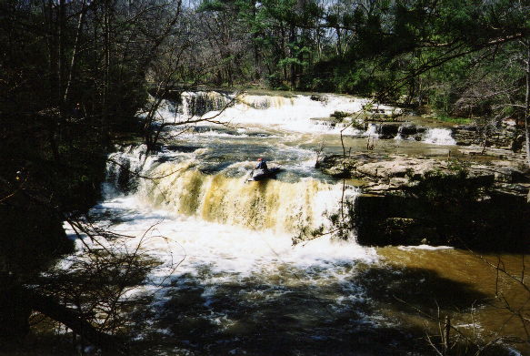 | A certain C-1 paddler finally realizing his longtime goal of running the put-in double waterfall. Looks like I actually remembered to take the last stroke at the edge. The first drop is run on far river right, on a smooth 45 degree slide somewhat obscured by the tree. You can also see that the 'flat' rock between the drops is just has a little bit of water pouring over it, signifying a nice level. This is directly behind the BP station on Rt 240. |
| 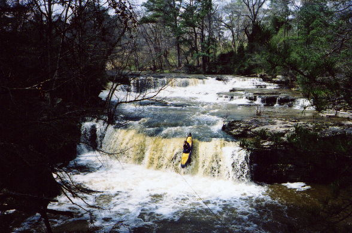 | Dave makes it look easy. |
| 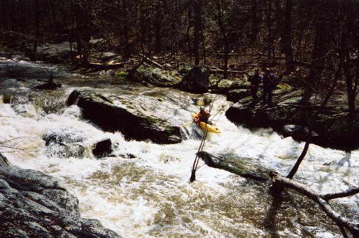 | Brian McAnally runs a drop just above the one spot we had to walk due to a tree. Below here is an undercut rock that may warrant safety being set. |
| 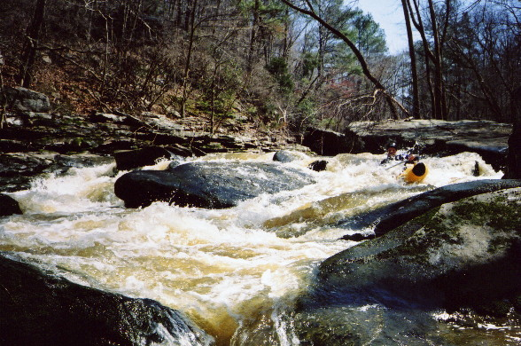 | Curt Ruffing in action |
| 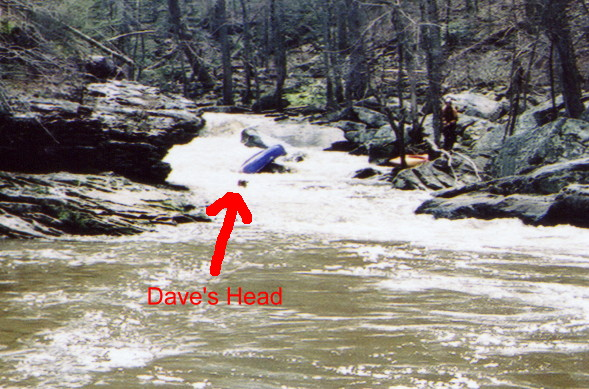 | I've given up taking carnage pictures of Dave for the most part. He now runs stuff that I walk. But here I had a relapse as he and his boat part ways. |
| 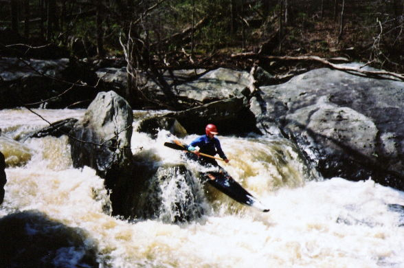 | The next drop requires you to be at this
point or you hit the barely submerged rock to river left. The best
way to enter is to catch the eddy on river left above this drop, but it
is highly recirculating and tough for the shorter boats to power into.
The aircraft carrier had no problem (there must be some reason I still
use it).
Don't have a clue what the Nikon was focusing on this time. |
| 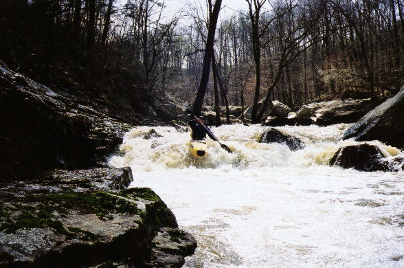 | Curt on the next drop. One example of a hole that could get sticky at higher water. |
| 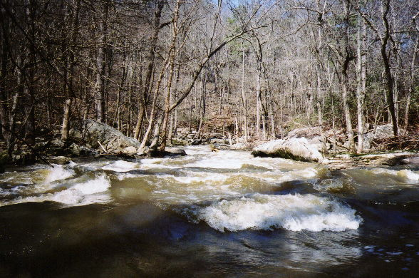 | Brian leading the way down a fun slide that cuts right towards the bottom. |
| 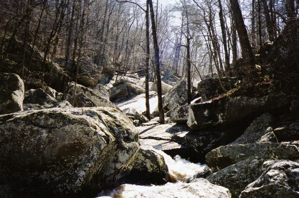 | The middle section of the big boy. |
| 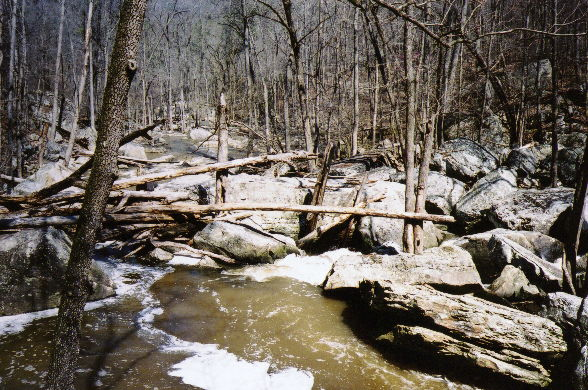 | The last drop of the enormo-rapid goes right through all those logs into... |
| 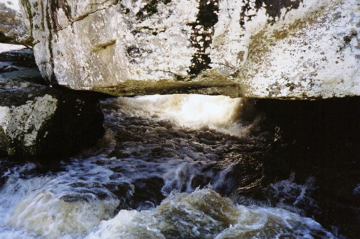 | This nice little undercut / cave / room of doom, which looks pretty clean from below. The rock over the water is the same one behind the trees from the picture above. |
| 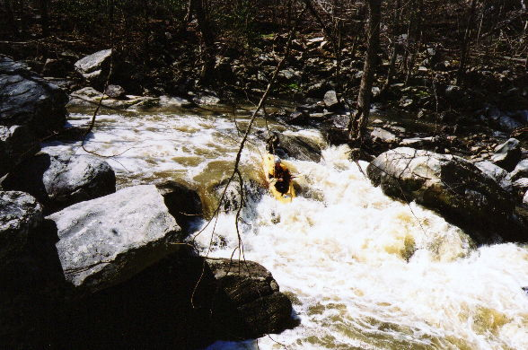 | Brian once again showing the line. This rapid was fairly long, it was best run over a 4' boof just out of view to the above river right, then into the eddy on the left. Pinning rocks abounded just inches from Brian's boat. |
| 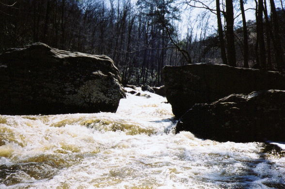 | I believe this is the bottom of a really fun, semi-long (by approaching middle age-wimpy-small creek-definitely not class III-eastern-drop/pool standards) rapid. |
| 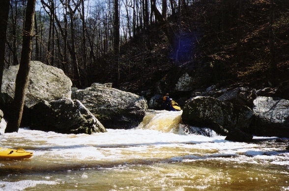 | The end of another rapid, this one negotiated by Dave using the amphibious technique. This may have been the last rapid harder than class III. |